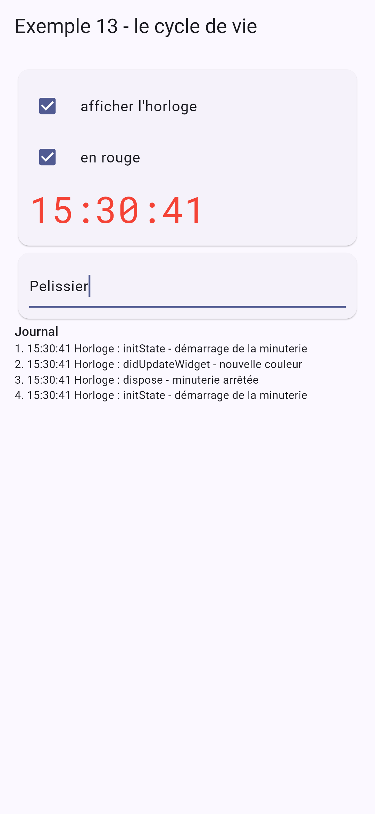

Écrire ses propres widgets, c'est le cœur du travail avec [Flutter] : un écran bien écrit est fait de petits widgets, chacun avec ses paramètres, son [build] et, s'il le faut, son état. Ce chapitre montre comment ils se parlent (paramètres, fonctions), comment ils s'assemblent (composition), comment ils vivent (cycle de vie), comment ils partagent des données sans les passer de main en main (données héritées), et comment on réutilise un comportement.
4.1.1. Le type des données
Le parent et l'enfant partagent une classe, rangée dans son propre fichier :
| // le type des données partagé par le parent (PageMedecins) et l'enfant (CarteMedecin)
class Medecin {
final int id;
final String titre;
final String prenom;
final String nom;
final String specialite;
final bool disponible;
const Medecin({
required this.id,
required this.titre,
required this.prenom,
required this.nom,
required this.specialite,
required this.disponible,
});
// une copie où seule la disponibilité change
Medecin avecDisponibilite(bool d) =>
Medecin(id: id, titre: titre, prenom: prenom, nom: nom, specialite: specialite, disponible: d);
}
|
- lignes 10-16 : un constructeur à paramètres nommés, tous obligatoires : [Medecin(id: 1, titre: 'Mme', ...)]. Les paramètres nommés rendent l'appel lisible, et leur ordre n'importe pas ;
- lignes 20-21 : une copie où seule la disponibilité change (l'objet lui-même ne change jamais).
4.1.2. L'enfant
| // =========================================================================
// lib/ex10_widgets_parametres/carte_medecin.dart - un widget ENFANT
// -------------------------------------------------------------------------
// Il reçoit ses données de son parent par les PARAMÈTRES de son
// constructeur, rangés dans des champs final. Leur type est vérifié à la
// compilation : CarteMedecin(medecin: 42) serait refusé.
// - required : le parent DOIT fournir ce paramètre ;
// - this.compact = false : un paramètre facultatif, avec sa valeur par défaut.
//
// Règle d'or : un widget ne MODIFIE JAMAIS ses paramètres (ils sont final).
// Les données descendent du parent vers l'enfant ; pour demander un
// changement, l'enfant appelle une fonction que le parent lui a passée
// (cf. exemple 11). Quand le parent change ses données, il RECONSTRUIT ses
// enfants avec de nouveaux paramètres.
// =========================================================================
import 'package:flutter/material.dart';
import 'medecin.dart';
// le "style" de la carte : des constantes PRIVÉES à ce fichier (le "_").
// Aucun autre widget ne peut les voir, ni être gêné par elles
const _couleurInitiales = Color(0xFF087EA4);
const _styleInitiales = TextStyle(color: Colors.white, fontWeight: FontWeight.bold);
class CarteMedecin extends StatelessWidget {
final Medecin medecin;
final int rang;
final bool compact;
// const : si tous les paramètres sont constants, le widget l'est aussi
// (Flutter n'a alors même pas besoin de le reconstruire)
const CarteMedecin({super.key, required this.medecin, required this.rang, this.compact = false});
@override
Widget build(BuildContext context) {
// une valeur calculée à partir des paramètres
final initiales = '${medecin.prenom[0]}${medecin.nom[0]}';
return Card(
// une bordure verte pour un médecin disponible
shape: RoundedRectangleBorder(
borderRadius: BorderRadius.circular(12),
side: medecin.disponible ? const BorderSide(color: Colors.green, width: 2) : BorderSide.none,
),
child: Padding(
padding: const EdgeInsets.all(12),
child: Row(
children: [
CircleAvatar(
backgroundColor: _couleurInitiales,
child: Text(initiales, style: _styleInitiales),
),
const SizedBox(width: 12),
// Expanded : le texte prend toute la largeur restante
Expanded(
child: Column(
crossAxisAlignment: CrossAxisAlignment.start,
children: [
Text(
'$rang. ${medecin.titre} ${medecin.prenom} ${medecin.nom}',
style: Theme.of(context).textTheme.titleMedium,
),
if (!compact) Text(medecin.specialite, style: const TextStyle(color: Colors.grey)),
],
),
),
],
),
),
);
}
}
|
- lignes 23-24 : le « style » de la carte : des constantes privées à ce fichier (le souligné). Aucun autre fichier ne peut les voir, ni être gêné par elles. C'est l'équivalent, en [Flutter], des « modules CSS » de [React] : il n'y a pas de feuille de style globale, le style d'un widget est dans son code ;
- lignes 27-29 : les paramètres du widget, rangés dans des champs [final] ;
- ligne 33 : le constructeur. [required this.medecin] : un paramètre nommé obligatoire, rangé directement dans le champ ; [this.compact = false] : un paramètre facultatif, avec sa valeur par défaut. Le constructeur est [const] : si tous les arguments sont constants, la carte l'est aussi ;
- ligne 38 : une valeur calculée à partir des paramètres ;
- lignes 42-44 : la forme de la carte ([Card]) : des coins arrondis, et une bordure verte pour un médecin disponible ([BorderSide.none] sinon) ;
- lignes 50-52 : un disque coloré, avec les initiales ;
- ligne 64 : la spécialité n'existe qu'en affichage non compact.
Règle d'or : un widget ne modifie jamais ses paramètres (ils sont [final], le compilateur l'interdit d'ailleurs). Les données descendent du parent vers l'enfant ; pour demander un changement, l'enfant appelle une fonction que le parent lui a passée (exemple 11). Quand le parent change ses données, il reconstruit ses enfants avec de nouveaux paramètres.
4.1.3. Le parent
| // =========================================================================
// lib/ex10_widgets_parametres/main.dart - le widget PARENT
// -------------------------------------------------------------------------
// Il importe le widget CarteMedecin et l'utilise, autant de fois qu'il le
// faut, comme n'importe quel widget de Flutter : un widget est un morceau
// d'interface RÉUTILISABLE, avec ses propres paramètres, son build() et
// son style. Écrire ses propres widgets, c'est le cœur du travail avec
// Flutter : un écran bien écrit est fait de petits widgets.
// =========================================================================
import 'package:flutter/material.dart';
import 'carte_medecin.dart';
import 'medecin.dart';
void main() {
runApp(
MaterialApp(
debugShowCheckedModeBanner: false,
theme: ThemeData(colorSchemeSeed: Colors.indigo),
home: const PageMedecins(),
),
);
}
class PageMedecins extends StatefulWidget {
const PageMedecins({super.key});
@override
State<PageMedecins> createState() => _PageMedecinsState();
}
class _PageMedecinsState extends State<PageMedecins> {
List<Medecin> _medecins = const [
Medecin(id: 1, titre: 'Mme', prenom: 'Marie', nom: 'PELISSIER', specialite: 'généraliste', disponible: true),
Medecin(id: 2, titre: 'Mr', prenom: 'Paul', nom: 'TATOU', specialite: 'pédiatre', disponible: false),
Medecin(id: 3, titre: 'Melle', prenom: 'Sophie', nom: 'DUPONT', specialite: 'généraliste', disponible: true),
];
bool _compact = false;
// le parent change SES données : Flutter rappelle son build(), qui
// reconstruit les enfants avec leurs nouveaux paramètres
void _inverserDisponibilite() {
setState(() {
_medecins = [for (final m in _medecins) m.avecDisponibilite(!m.disponible)];
});
}
@override
Widget build(BuildContext context) {
return Scaffold(
appBar: AppBar(title: const Text('Exemple 10 - les widgets et leurs paramètres')),
body: ListView(
padding: const EdgeInsets.all(16),
children: [
SwitchListTile(
contentPadding: EdgeInsets.zero,
title: const Text('affichage compact'),
value: _compact,
onChanged: (v) => setState(() => _compact = v),
),
Align(
alignment: Alignment.centerLeft,
child: OutlinedButton(onPressed: _inverserDisponibilite, child: const Text('Inverser les disponibilités')),
),
const SizedBox(height: 8),
for (final (i, m) in _medecins.indexed)
// chaque carte reçoit SES paramètres
CarteMedecin(key: ValueKey(m.id), medecin: m, rang: i + 1, compact: _compact),
const SizedBox(height: 16),
const Text(
'La même carte, en version compacte, en fixant le paramètre :',
style: TextStyle(color: Colors.grey),
),
SizedBox(width: 260, child: CarteMedecin(medecin: _medecins[0], rang: 1, compact: true)),
],
),
);
}
}
|
- lignes 34-39 : l'état du parent : la liste des médecins (une liste constante, qu'on remplacera par une autre) et l'affichage compact ;
- lignes 43-45 : le parent change SES données : une nouvelle liste, faite de copies des médecins. [Flutter] rappelle son [build], qui reconstruit les cartes avec leurs nouveaux paramètres ;
- ligne 69 : une carte par médecin, avec SES paramètres. On utilise le widget [CarteMedecin] exactement comme un widget de [Flutter] ;
- ligne 75 : la même carte, en version compacte, dans une boîte de 260 points de large.
Au départ, puis en affichage compact, disponibilités inversées :
Une méthode qui fabrique des widgets (comme [_ligne] de l'exemple 02) ou un vrai widget ([CarteMedecin]) ? Le vrai widget est presque toujours préférable : il a un nom, ses paramètres sont typés et documentés, il est réutilisable ailleurs, et [Flutter] peut éviter de le reconstruire (s'il est [const], ou si ses paramètres n'ont pas changé).
4.2. Exemple 11 : l'enfant prévient son parent
Les données descendent par les paramètres ; les informations remontent par des fonctions passées en paramètres.
4.2.1. Des « événements » de l'enfant
| // =========================================================================
// lib/ex11_remonter_l_information/compteur.dart
// -------------------------------------------------------------------------
// Un enfant qui PRÉVIENT son parent : le parent lui passe des FONCTIONS en
// paramètres (par convention, leur nom commence par "on"), et l'enfant les
// appelle quand il se passe quelque chose :
// Compteur(libelle: 'Cafés', max: 3, onIncremente: ..., onLimite: ...)
// Les types de ces fonctions ont des noms tout prêts dans Flutter :
// - ValueChanged<int> : une fonction qui reçoit un int et ne renvoie rien ;
// - VoidCallback : une fonction sans paramètre, qui ne renvoie rien.
// =========================================================================
import 'package:flutter/material.dart';
class Compteur extends StatefulWidget {
final String libelle;
final int max;
final ValueChanged<int> onIncremente; // avec la nouvelle valeur
final VoidCallback onLimite; // sans donnée
const Compteur({
super.key,
required this.libelle,
required this.max,
required this.onIncremente,
required this.onLimite,
});
@override
State<Compteur> createState() => _CompteurState();
}
class _CompteurState extends State<Compteur> {
// l'état PROPRE à ce compteur : chaque Compteur a le sien
int _valeur = 0;
void _plus() {
// widget : dans l'objet State, donne accès aux paramètres du widget
if (_valeur >= widget.max) {
widget.onLimite();
return;
}
setState(() => _valeur++);
// on PRÉVIENT le parent, en lui transmettant la nouvelle valeur
widget.onIncremente(_valeur);
}
@override
Widget build(BuildContext context) {
return Row(
children: [
SizedBox(width: 110, child: Text(widget.libelle)),
OutlinedButton(onPressed: _plus, child: const Text('+1')),
const SizedBox(width: 12),
Chip(label: Text('$_valeur / ${widget.max}')),
],
);
}
}
|
- lignes 18-19 : deux paramètres qui sont des fonctions, que le compteur appellera. [ValueChanged<int>] est le type d'une fonction qui reçoit un [int] et ne renvoie rien ; [VoidCallback], celui d'une fonction sans paramètre. Par convention, leur nom commence par « on », comme [onPressed] ou [onChanged] des widgets de [Flutter] ;
- ligne 35 : l'état PROPRE à ce compteur : chaque [Compteur] a le sien ;
- lignes 37-45 : dans l'objet [State], [widget] donne accès aux paramètres du widget : [widget.max], [widget.onLimite]... Au-delà du maximum, le compteur prévient son parent ([widget.onLimite()]) ; sinon, il change son état, puis prévient son parent en lui transmettant la nouvelle valeur. Contrairement à [React], l'état est modifié tout de suite : [_valeur] a déjà sa nouvelle valeur quand on la transmet.
| // =========================================================================
// lib/ex11_remonter_l_information/champ_texte.dart - un widget CONTRÔLÉ
// -------------------------------------------------------------------------
// Un champ de formulaire "maison" (libellé + champ + aide + compteur de
// caractères) qui s'utilise comme un champ contrôlé :
// ChampTexte(valeur: _nom, onChanged: (v) => setState(() => _nom = v), ...)
// La valeur appartient au PARENT, qui la lui passe (valeur) et qu'il
// prévient de chaque frappe (onChanged). C'est le parent qui décide.
//
// Une difficulté propre à Flutter : un TextField garde son texte dans un
// contrôleur, qui doit survivre aux reconstructions. Le widget a donc un
// état (le contrôleur)... qu'il doit tenir À JOUR quand le parent change
// la valeur (bouton "Vider") : c'est le rôle de didUpdateWidget.
// =========================================================================
import 'package:flutter/material.dart';
class ChampTexte extends StatefulWidget {
final String valeur;
final ValueChanged<String> onChanged;
final String libelle;
final int max;
final String aide;
const ChampTexte({
super.key,
required this.valeur,
required this.onChanged,
required this.libelle,
required this.max,
this.aide = '',
});
@override
State<ChampTexte> createState() => _ChampTexteState();
}
class _ChampTexteState extends State<ChampTexte> {
// late : le champ sera initialisé plus tard (dans initState), avant tout usage
late final TextEditingController _controleur;
@override
void initState() {
super.initState();
_controleur = TextEditingController(text: widget.valeur);
}
// appelée quand le PARENT reconstruit ce widget avec de nouveaux paramètres ;
// ancien : le widget d'avant, pour comparer
@override
void didUpdateWidget(ChampTexte ancien) {
super.didUpdateWidget(ancien);
if (widget.valeur != _controleur.text) {
_controleur.text = widget.valeur; // le parent a changé la valeur lui-même
}
}
@override
void dispose() {
_controleur.dispose();
super.dispose();
}
@override
Widget build(BuildContext context) {
final plein = widget.valeur.length == widget.max;
return TextField(
controller: _controleur,
maxLength: widget.max, // le champ refuse les caractères de trop
decoration: InputDecoration(
labelText: widget.libelle,
helperText: widget.aide,
// la bordure devient rouge quand le champ est plein
errorText: plein ? 'Longueur maximale atteinte' : null,
),
onChanged: widget.onChanged, // la fonction du parent, passée telle quelle
);
}
}
|
Un champ de formulaire « maison » (libellé + champ + aide + compteur de caractères) qui s'utilise comme un champ contrôlé : la valeur appartient au parent, qui la lui passe ([valeur]) et qu'il prévient de chaque frappe ([onChanged]).
- ligne 40 : [late] : ce champ sera initialisé plus tard (dans [initState]), mais avant tout usage. [Dart] le vérifie à l'exécution ;
- lignes 43-45 : le contrôleur démarre avec la valeur du parent ;
- lignes 51-54 : c'est la difficulté propre à [Flutter] : un [TextField] garde son texte dans un contrôleur, qui doit survivre aux reconstructions. Le widget a donc un état (le contrôleur)... qu'il doit tenir à jour quand le parent change la valeur lui-même (bouton Vider). [didUpdateWidget] est appelée chaque fois que le parent reconstruit ce widget avec de nouveaux paramètres ; elle reçoit l'ancien widget, pour comparer. Si la valeur du parent diffère du texte du champ, on la recopie ;
- ligne 69 : le champ refuse les caractères de trop, et affiche un compteur (« 12/20 ») ;
- ligne 72 : un texte d'aide, sous le champ ;
- ligne 74 : la bordure devient rouge quand le champ est plein ;
- ligne 76 : la fonction du parent, passée telle quelle au [TextField].
4.2.3. Le parent
| // =========================================================================
// lib/ex11_remonter_l_information/main.dart - le parent écoute ses enfants
// -------------------------------------------------------------------------
// Les données descendent (paramètres) ; les informations remontent par des
// fonctions passées en paramètres :
// 1. des "événements" de l'enfant : onIncremente, onLimite ;
// 2. un widget contrôlé : valeur + onChanged, comme un Checkbox. L'état
// reste la propriété du parent, qui peut le modifier lui-même (Vider).
// =========================================================================
import 'package:flutter/material.dart';
import 'champ_texte.dart';
import 'compteur.dart';
void main() {
runApp(
MaterialApp(
debugShowCheckedModeBanner: false,
theme: ThemeData(colorSchemeSeed: Colors.indigo),
home: const PageParent(),
),
);
}
class PageParent extends StatefulWidget {
const PageParent({super.key});
@override
State<PageParent> createState() => _PageParentState();
}
class _PageParentState extends State<PageParent> {
int _total = 0;
String _message = '';
String _prenom = 'Marie';
String _nom = 'PELISSIER';
// la fonction appelée par un compteur : elle reçoit la valeur qu'il transmet
void _surIncremente(String libelle, int valeur) {
setState(() {
_total++;
_message = '$libelle vaut maintenant $valeur';
});
}
void _vider() {
setState(() {
_prenom = '';
_nom = '';
});
}
@override
Widget build(BuildContext context) {
final styleTitre = Theme.of(context).textTheme.titleSmall;
return Scaffold(
appBar: AppBar(title: const Text("Exemple 11 - l'enfant prévient son parent")),
body: ListView(
padding: const EdgeInsets.all(16),
children: [
Card(
child: Padding(
padding: const EdgeInsets.all(12),
child: Column(
crossAxisAlignment: CrossAxisAlignment.start,
children: [
Text('1. Des fonctions appelées par les enfants', style: styleTitre),
Compteur(
libelle: 'Cafés',
max: 3,
onIncremente: (v) => _surIncremente('Cafés', v),
onLimite: () => setState(() => _message = 'Pas plus de 3 cafés !'),
),
Compteur(
libelle: "Verres d'eau",
max: 8,
onIncremente: (v) => _surIncremente("Verres d'eau", v),
onLimite: () => setState(() => _message = 'Assez bu.'),
),
const SizedBox(height: 8),
Text('Total des clics : $_total - $_message', style: const TextStyle(fontStyle: FontStyle.italic)),
],
),
),
),
Card(
child: Padding(
padding: const EdgeInsets.all(12),
child: Column(
crossAxisAlignment: CrossAxisAlignment.start,
children: [
Text('2. Des widgets contrôlés', style: styleTitre),
ChampTexte(
valeur: _prenom,
onChanged: (v) => setState(() => _prenom = v),
libelle: 'Prénom',
max: 20,
aide: 'Obligatoire',
),
ChampTexte(
valeur: _nom,
onChanged: (v) => setState(() => _nom = v),
libelle: 'Nom',
max: 20,
aide: "Mis en majuscules à l'affichage",
),
const SizedBox(height: 8),
Text.rich(
TextSpan(
children: [
const TextSpan(text: 'Données du parent : '),
TextSpan(
text: '$_prenom ${_nom.toUpperCase()}',
style: const TextStyle(fontWeight: FontWeight.bold),
),
],
),
),
const SizedBox(height: 8),
OutlinedButton(onPressed: _vider, child: const Text('Vider (depuis le parent)')),
],
),
),
),
],
),
);
}
}
|
- lignes 40-43 : la fonction appelée par un compteur : elle reçoit la valeur qu'il transmet ;
- lignes 69-73 : un compteur, et les fonctions qu'il appellera. [(v) => _surIncremente('Cafés', v)] : une fonction anonyme, qui ajoute son propre argument (le libellé) ;
- lignes 94-99 : un champ contrôlé : sa valeur, et la fonction qui change l'état du parent ;
- ligne 114 : les données du parent, qui suivent la saisie ;
- ligne 121 : le parent change la valeur lui-même : les champs se vident (par leur [didUpdateWidget]).
On appuie quatre fois sur le premier compteur, une fois sur le second, et l'on remplit le nom ; puis on vide les champs depuis le parent :
4.3. Exemple 12 : la composition
4.3.1. Une carte
Les paramètres d'un widget transmettent des données... mais aussi du contenu : un widget est une valeur comme une autre, qu'on peut passer à un autre widget. [Flutter] l'utilise partout : le [child] d'un [Padding], le [title] d'une [AppBar], le [body] d'un [Scaffold].
| // =========================================================================
// lib/ex12_composition/carte.dart - un GABARIT réutilisable
// -------------------------------------------------------------------------
// Les paramètres d'un widget transmettent des DONNÉES... mais aussi du
// CONTENU : un widget est une valeur comme une autre, qu'on peut passer à
// un autre widget, qui la place où il veut. Flutter l'utilise partout :
// le child d'un Padding, le title d'un AppBar, le body d'un Scaffold...
// - child : par convention, le contenu "principal" ;
// - entete, pied : d'autres emplacements (des "slots"), fournis par le
// parent ; l'en-tête a un contenu par défaut, le pied est facultatif.
// La carte fixe le cadre (bordure, en-tête, pied), le parent fournit ce
// qu'il y a dedans.
// =========================================================================
import 'package:flutter/material.dart';
class Carte extends StatelessWidget {
final Color? couleur; // "?" : facultatif (null par défaut)
final Widget entete;
final Widget? pied;
final Widget child;
const Carte({super.key, this.couleur, this.entete = const Text('Sans titre'), this.pied, required this.child});
@override
Widget build(BuildContext context) {
final fond = couleur ?? Colors.grey.shade300;
return Card(
// clipBehavior : l'en-tête coloré suit les coins arrondis de la carte
clipBehavior: Clip.antiAlias,
shape: RoundedRectangleBorder(
borderRadius: BorderRadius.circular(8),
side: BorderSide(color: fond),
),
child: Column(
crossAxisAlignment: CrossAxisAlignment.stretch,
children: [
Container(
color: fond,
padding: const EdgeInsets.all(10),
// DefaultTextStyle : le style de TOUS les textes de l'en-tête,
// quel que soit le widget fourni par le parent
child: DefaultTextStyle.merge(
style: TextStyle(color: couleur == null ? Colors.black : Colors.white, fontWeight: FontWeight.bold),
child: entete,
),
),
Padding(padding: const EdgeInsets.all(10), child: child),
// pas de pied fourni : pas de pied du tout
if (pied != null)
Container(
color: Colors.grey.shade100,
padding: const EdgeInsets.all(8),
child: DefaultTextStyle.merge(
style: const TextStyle(color: Colors.grey, fontSize: 12),
child: pied!,
),
),
],
),
);
}
}
|
- lignes 18-21 : les paramètres : une couleur facultative ([Color?]), et trois emplacements pour du contenu : [entete], [pied] (facultatif) et [child], le contenu principal ;
- ligne 23 : l'en-tête a un contenu par défaut : un widget constant ;
- ligne 27 : la couleur de l'en-tête : celle fournie, ou un gris clair ;
- ligne 30 : l'en-tête coloré est découpé selon les coins arrondis de la carte ;
- lignes 43-45 : [DefaultTextStyle] fixe le style de TOUS les textes de son sous-arbre, quel que soit le widget fourni par le parent : l'en-tête est en gras, en blanc sur une couleur ;
- ligne 48 : le contenu principal, fourni par le parent ;
- lignes 50-58 : pas de pied fourni, pas de pied du tout. [pied!] : dans cette branche, [pied] n'est pas [null] (le compilateur ne le devine pas pour un champ, d'où le [!]).
4.3.2. Un tableau générique
| // =========================================================================
// lib/ex12_composition/tableau.dart - un tableau GÉNÉRIQUE
// -------------------------------------------------------------------------
// Tableau<T> est un widget générique : il affiche des lignes de n'importe
// quel type T. Il sait parcourir les lignes, mais pas comment afficher UNE
// ligne : c'est le parent qui le lui dit, en lui passant une FONCTION,
// cellules(ligne, index), qui renvoie les widgets des cellules.
// C'est le principe des "builders" de Flutter (ListView.builder,
// FutureBuilder...) : le contenu fourni par le parent utilise des données
// qui appartiennent à l'enfant (la ligne, son rang).
// =========================================================================
import 'package:flutter/material.dart';
// le type d'une fonction qui fabrique les cellules d'une ligne
typedef ConstructeurCellules<T> = List<Widget> Function(T ligne, int index);
class Tableau<T> extends StatelessWidget {
final List<T> lignes;
final List<String> colonnes;
final ConstructeurCellules<T> cellules;
final Widget vide; // affiché quand il n'y a aucune ligne
const Tableau({
super.key,
required this.lignes,
required this.colonnes,
required this.cellules,
this.vide = const Text('Aucune donnée.'),
});
// une cellule : un peu de marge autour de son contenu
static Widget _cellule(Widget contenu) => Padding(padding: const EdgeInsets.all(6), child: contenu);
@override
Widget build(BuildContext context) {
if (lignes.isEmpty) {
return Column(
crossAxisAlignment: CrossAxisAlignment.start,
children: [
Text(colonnes.join(' '), style: const TextStyle(fontWeight: FontWeight.bold)),
const Divider(),
DefaultTextStyle.merge(
style: const TextStyle(color: Colors.grey),
child: vide,
),
],
);
}
return Table(
defaultVerticalAlignment: TableCellVerticalAlignment.middle,
border: TableBorder(horizontalInside: BorderSide(color: Colors.grey.shade300)),
children: [
TableRow(
children: [for (final c in colonnes) _cellule(Text(c, style: const TextStyle(fontWeight: FontWeight.bold)))],
),
for (final (i, ligne) in lignes.indexed)
// les cellules de CETTE ligne, fabriquées par la fonction du parent
TableRow(children: [for (final c in cellules(ligne, i)) _cellule(c)]),
],
);
}
}
|
- ligne 16 : le type d'une fonction qui reçoit une ligne (de type [T]) et son rang, et renvoie les widgets de ses cellules ;
- ligne 18 : un widget générique : il affiche des lignes de n'importe quel type [T]. Il sait parcourir les lignes, mais pas comment afficher UNE ligne : c'est le parent qui le lui dit, en lui passant la fonction [cellules]. C'est le principe des « builders » de [Flutter] ([ListView.builder], [FutureBuilder]...) : le contenu est fourni par le parent, mais il utilise des données qui appartiennent à l'enfant (la ligne, son rang). [React] appelle cela une « render prop » ;
- ligne 33 : une méthode [static], qui n'utilise aucun champ du widget ;
- lignes 37-45 : pas de ligne : les titres des colonnes et le contenu [vide], fourni par le parent ;
- lignes 50-59 : le tableau : une rangée de titres, puis une rangée par ligne, dont les cellules sont fabriquées par la fonction du parent.
4.3.3. Le parent
| // =========================================================================
// lib/ex12_composition/main.dart - utiliser les gabarits Carte et Tableau
// =========================================================================
import 'package:flutter/material.dart';
import 'carte.dart';
import 'tableau.dart';
// un créneau : un record nommé (pas besoin d'écrire une classe)
typedef Creneau = ({int id, String horaire, String? patient});
const creneaux = <Creneau>[
(id: 1, horaire: '8:00 - 8:20', patient: null),
(id: 2, horaire: '8:20 - 8:40', patient: 'Mme Alice DURAND'),
(id: 3, horaire: '8:40 - 9:00', patient: null),
];
void main() {
runApp(
MaterialApp(
debugShowCheckedModeBanner: false,
theme: ThemeData(colorSchemeSeed: Colors.indigo),
home: const PageComposition(),
),
);
}
class PageComposition extends StatelessWidget {
const PageComposition({super.key});
@override
Widget build(BuildContext context) {
final libres = creneaux.where((c) => c.patient == null).length;
return Scaffold(
appBar: AppBar(title: const Text('Exemple 12 - la composition')),
body: ListView(
padding: const EdgeInsets.all(16),
children: [
// entete et pied : des widgets passés en paramètres ; child : le contenu
Carte(
couleur: Colors.indigo,
entete: const Row(
children: [
Icon(Icons.event, color: Colors.white),
SizedBox(width: 8),
// Expanded : le texte prend la place restante (et passe à la ligne)
Expanded(child: Text('Agenda de Mme PELISSIER')),
],
),
pied: Text('$libres créneau(x) libre(s)'),
// Tableau<Creneau> : T est déduit du type de lignes
child: Tableau(
lignes: creneaux,
colonnes: const ['#', 'Créneau', 'Statut'],
// la fonction qui fabrique les cellules d'UNE ligne ;
// c reçoit la ligne, i son rang
cellules: (c, i) => [
Text('${i + 1}'),
Text(c.horaire),
c.patient != null
? Chip(label: Text(c.patient!), visualDensity: VisualDensity.compact)
: Chip(
label: const Text('Libre'),
backgroundColor: Colors.green.shade100,
visualDensity: VisualDensity.compact,
),
],
),
),
const Carte(
couleur: Colors.green,
entete: Text('Une carte sans pied'),
child: Text("Le pied n'est pas fourni : la carte ne l'affiche pas."),
),
// pas d'en-tête fourni : le contenu par défaut, « Sans titre »
Carte(
child: Tableau<({int id, String nom})>(
lignes: const [],
colonnes: const ['Nom'],
cellules: (p, _) => [Text(p.nom)],
vide: const Text("Personne pour l'instant."),
),
),
],
),
);
}
}
|
- ligne 11 : un créneau, sous forme de record nommé ;
- lignes 42-52 : une carte : sa couleur, un en-tête (une ligne : une icône et un texte), un pied ;
- lignes 54-66 : son contenu : un tableau de créneaux. [T] est déduit du type de [lignes] : c'est un [Tableau<Creneau>]. La fonction [cellules] reçoit un créneau ([c]) et son rang ([i]), et renvoie trois widgets ;
- lignes 72-75 : une carte sans pied ;
- lignes 79-83 : une carte sans en-tête (le contenu par défaut, « Sans titre ») ; son tableau est vide. [Tableau<({int id, String nom})>] : le type [T] est donné explicitement, parce que [lignes: const []] ne permet pas de le deviner.

La carte fixe le cadre (bordure, en-tête, pied), le parent fournit ce qu'il y a dedans. C'est ainsi que sont faits les widgets de [Flutter] eux-mêmes : [Scaffold] fixe la structure d'un écran, et reçoit la barre du haut, le corps, le bouton flottant.
4.4.1. Une horloge
| // =========================================================================
// lib/ex13_cycle_de_vie/horloge.dart - un widget qui démarre et s'arrête
// -------------------------------------------------------------------------
// La vie de l'objet State d'un StatefulWidget :
// 1. initState() : il vient d'être créé, le widget va
// apparaître. On y démarre ce qui doit l'être ;
// 2. didChangeDependencies() : juste après, puis chaque fois qu'une donnée
// héritée qu'il lit change (cf. exemple 14) ;
// 3. build() : autant de fois qu'il le faut ;
// 4. didUpdateWidget(ancien) : le parent l'a reconstruit avec de nouveaux
// paramètres ;
// 5. dispose() : le widget disparaît pour toujours. On
// y ARRÊTE ce qui a été démarré.
// Une horloge lance une minuterie (Timer.periodic) quand elle apparaît...
// et doit impérativement l'arrêter quand elle disparaît : sinon la
// minuterie continuerait de tourner pour rien, et appellerait setState()
// sur un objet mort (une erreur).
// =========================================================================
import 'dart:async';
import 'package:flutter/material.dart';
String heureCourante() => DateTime.now().toString().substring(11, 19); // "12:05:09"
class Horloge extends StatefulWidget {
final ValueChanged<String> onJournal;
final Color couleur;
const Horloge({super.key, required this.onJournal, this.couleur = Colors.indigo});
@override
State<Horloge> createState() => _HorlogeState();
}
class _HorlogeState extends State<Horloge> {
String _heure = heureCourante();
// late : initialisée dans initState
late final Timer _minuterie;
// prévenir le parent... APRÈS la construction de l'écran en cours : on ne
// modifie pas l'état d'un widget (le parent) pendant qu'il se construit
void _journaliser(String message) {
WidgetsBinding.instance.addPostFrameCallback((_) => widget.onJournal(message));
}
@override
void initState() {
super.initState(); // toujours en premier
_journaliser('Horloge : initState - démarrage de la minuterie');
_minuterie = Timer.periodic(const Duration(seconds: 1), (_) {
setState(() => _heure = heureCourante());
});
}
@override
void didUpdateWidget(Horloge ancien) {
super.didUpdateWidget(ancien);
if (ancien.couleur != widget.couleur) {
_journaliser('Horloge : didUpdateWidget - nouvelle couleur');
}
}
@override
void dispose() {
_minuterie.cancel(); // le NETTOYAGE
_journaliser('Horloge : dispose - minuterie arrêtée');
super.dispose(); // toujours en dernier
}
@override
Widget build(BuildContext context) {
return Text(
_heure,
style: TextStyle(fontSize: 40, fontFamily: 'RobotoMono', color: widget.couleur),
);
}
}
|
La vie de l'objet [State] d'un [StatefulWidget] :
Méthode | Quand ? |
initState() | l'objet vient d'être créé, le widget va apparaître. On y démarre ce qui doit l'être (minuterie, abonnement...) |
didChangeDependencies() | juste après initState, puis chaque fois qu'une donnée héritée qu'il lit change (cf. exemple 14) |
build() | autant de fois qu'il le faut |
didUpdateWidget(ancien) | le parent l'a reconstruit avec de nouveaux paramètres |
dispose() | le widget disparaît pour toujours. On y arrête ce qui a été démarré |
- lignes 37-39 : l'état : l'heure affichée, et une minuterie ([Timer], de la bibliothèque [dart:async]) ;
- lignes 43-44 : l'horloge prévient son parent de chaque étape de sa vie. Mais elle le fait pendant [initState] ou [dispose], c'est-à-dire pendant que [Flutter] construit l'écran : le parent ne peut pas modifier son état à ce moment-là ([setState] provoquerait une erreur). [addPostFrameCallback] repousse l'appel après la fin de la construction de l'image en cours ;
- lignes 48-52 : [super.initState()] d'abord, toujours. Puis on démarre une minuterie périodique : sa fonction est appelée toutes les secondes, et met l'heure à jour ;
- lignes 57-60 : le parent a reconstruit l'horloge avec une autre couleur : on le note ;
- lignes 65-68 : le nettoyage : on arrête la minuterie. Sans cela, elle continuerait de tourner pour rien, et appellerait [setState] sur un objet mort : une erreur (« setState() called after dispose() »), et une fuite de mémoire. [super.dispose()] en dernier, toujours.
4.4.2. Le parent
| // =========================================================================
// lib/ex13_cycle_de_vie/main.dart
// -------------------------------------------------------------------------
// - if (_avecHorloge) Horloge(...) : cocher / décocher la case fait
// apparaître / disparaître le widget (initState, puis dispose, cf.
// horloge.dart) ; changer sa couleur le reconstruit (didUpdateWidget) ;
// - autofocus : un champ de saisie qui prend le focus dès qu'il apparaît
// (le clavier du téléphone s'ouvre) ;
// - le titre de l'application suit la saisie (widget Title) ;
// - AppLifecycleListener : la vie de l'APPLICATION elle-même. Sur un
// téléphone, elle passe au second plan (on ouvre une autre application,
// l'écran s'éteint), puis revient : on peut y réagir (sauvegarder,
// arrêter une minuterie...).
// =========================================================================
import 'package:flutter/material.dart';
import 'horloge.dart';
void main() {
runApp(
MaterialApp(
debugShowCheckedModeBanner: false,
theme: ThemeData(colorSchemeSeed: Colors.indigo),
home: const PageCycleDeVie(),
),
);
}
class PageCycleDeVie extends StatefulWidget {
const PageCycleDeVie({super.key});
@override
State<PageCycleDeVie> createState() => _PageCycleDeVieState();
}
class _PageCycleDeVieState extends State<PageCycleDeVie> {
bool _avecHorloge = true;
bool _rouge = false;
final List<String> _journal = [];
String _recherche = '';
bool _afficherRecherche = false;
late final AppLifecycleListener _ecouteur;
void _tracer(String message) {
// l'horloge peut prévenir APRÈS la disparition de l'écran (fermeture de l'application)
if (!mounted) return;
setState(() => _journal.add('${heureCourante()} $message'));
}
@override
void initState() {
super.initState();
// l'application change d'état : resumed (au premier plan), inactive,
// hidden, paused (au second plan)...
_ecouteur = AppLifecycleListener(onStateChange: (etat) => _tracer('Application : ${etat.name}'));
}
@override
void dispose() {
_ecouteur.dispose();
super.dispose();
}
@override
Widget build(BuildContext context) {
return Title(
title: _recherche.isEmpty ? 'Exemple 13' : 'Recherche : $_recherche',
color: Colors.indigo,
child: Scaffold(
appBar: AppBar(title: const Text('Exemple 13 - le cycle de vie')),
body: ListView(
padding: const EdgeInsets.all(16),
children: [
Card(
child: Padding(
padding: const EdgeInsets.all(12),
child: Column(
crossAxisAlignment: CrossAxisAlignment.start,
children: [
CheckboxListTile(
contentPadding: EdgeInsets.zero,
controlAffinity: ListTileControlAffinity.leading,
title: const Text("afficher l'horloge"),
value: _avecHorloge,
onChanged: (v) => setState(() => _avecHorloge = v!),
),
CheckboxListTile(
contentPadding: EdgeInsets.zero,
controlAffinity: ListTileControlAffinity.leading,
title: const Text('en rouge'),
value: _rouge,
onChanged: (v) => setState(() => _rouge = v!),
),
if (_avecHorloge) Horloge(onJournal: _tracer, couleur: _rouge ? Colors.red : Colors.indigo),
],
),
),
),
Card(
child: Padding(
padding: const EdgeInsets.all(12),
child: !_afficherRecherche
? Align(
alignment: Alignment.centerLeft,
child: OutlinedButton(
onPressed: () => setState(() => _afficherRecherche = true),
child: const Text('Rechercher...'),
),
)
// autofocus : le focus dès l'apparition du champ
: TextField(
autofocus: true,
decoration: const InputDecoration(hintText: 'le titre suit la saisie'),
onChanged: (v) => setState(() => _recherche = v),
),
),
),
Text('Journal', style: Theme.of(context).textTheme.titleSmall),
for (final (i, ligne) in _journal.indexed) Text('${i + 1}. $ligne', style: const TextStyle(fontSize: 12)),
],
),
),
);
}
}
|
- lignes 56-61 : la vie de l'application elle-même. Sur un téléphone, elle passe au second plan (on ouvre une autre application, l'écran s'éteint) puis revient : [AppLifecycleListener] prévient de chaque changement ([resumed] : au premier plan ; [inactive], [hidden], [paused] : en train de passer au second plan...). On y réagirait pour sauvegarder un brouillon ou arrêter une minuterie. L'écouteur est créé dans [initState] et libéré dans [dispose] : le même schéma que la minuterie de l'horloge ;
- ligne 95 : cocher la case fait apparaître l'horloge ([initState]), la décocher la fait disparaître ([dispose]) ; changer sa couleur la reconstruit ([didUpdateWidget]) ;
- lignes 112-115 : un champ qui n'existe qu'après l'appui sur « Rechercher... ». [autofocus: true] : il prend le focus dès qu'il apparaît, et le clavier du téléphone s'ouvre ;
- ligne 68 : le titre de l'application suit la saisie.
On change la couleur, on retire puis on remet l'horloge, on ouvre la recherche et on tape un nom :

Le journal montre la vie de l'horloge : démarrage, changement de couleur, arrêt, démarrage.
Le lecteur du cours [React] comparera avec [useEffect] : ce que [React] écrit dans un effet et sa fonction de nettoyage, [Flutter] le répartit entre [initState] et [dispose] ; ce que [React] obtient avec le tableau des dépendances d'un effet, [Flutter] l'obtient avec [didUpdateWidget], en comparant l'ancien widget au nouveau.
4.5. Exemple 14 : les données héritées
Comment partager des données et des fonctions entre des widgets éloignés, sans les passer de paramètre en paramètre à travers tous les intermédiaires ? Avec une donnée héritée, un [InheritedWidget]. C'est le mécanisme que [Flutter] utilise lui-même : [Theme.of(context)], [MediaQuery.of(context)], [Navigator.of(context)]... sont des lectures de données héritées. [React] appelle cela un contexte ; [Angular] y répondrait par un service.
4.5.1. Une donnée pour toute l'application
| // =========================================================================
// lib/ex14_donnees_heritees/fournisseurs/journal.dart - une donnée pour TOUTE l'application
// -------------------------------------------------------------------------
// Comment partager des données et des fonctions entre des widgets
// éloignés, sans les passer de paramètre en paramètre à travers tous les
// intermédiaires ? Avec un InheritedWidget, une donnée "héritée" :
// 1. un widget FOURNISSEUR, placé haut dans l'arbre, porte la donnée ;
// 2. n'importe quel descendant, à n'importe quelle profondeur, la LIT
// par context.dependOnInheritedWidgetOfExactType<Fournisseur>() ;
// 3. le descendant qui l'a lue est alors ABONNÉ : il est reconstruit
// quand la donnée change.
// C'est le mécanisme que Flutter utilise lui-même : Theme.of(context),
// MediaQuery.of(context), Navigator.of(context)... sont des lectures de
// données héritées.
//
// InheritedNotifier est une variante tout prête : la donnée est un objet
// qui PRÉVIENT de ses changements (un ChangeNotifier, qui appelle
// notifyListeners()), et le fournisseur reconstruit alors ses lecteurs.
// L'usage : une méthode statique of(context) pour lire la donnée.
// =========================================================================
import 'package:flutter/material.dart';
// la donnée : un ChangeNotifier. notifyListeners() prévient ses abonnés
class Journal extends ChangeNotifier {
final List<String> lignes = [];
void tracer(String message) {
lignes.insert(0, '${DateTime.now().toString().substring(11, 19)} $message');
if (lignes.length > 6) lignes.removeLast();
notifyListeners();
}
}
// le fournisseur : il porte le journal, et reconstruit ses lecteurs quand
// le journal prévient d'un changement
class JournalFournisseur extends InheritedNotifier<Journal> {
const JournalFournisseur({super.key, required Journal journal, required super.child}) : super(notifier: journal);
// la lecture : le fournisseur le plus PROCHE au-dessus de context
static Journal of(BuildContext context) {
final fournisseur = context.dependOnInheritedWidgetOfExactType<JournalFournisseur>();
if (fournisseur == null) {
throw FlutterError('JournalFournisseur.of : aucun JournalFournisseur au-dessus de ce widget');
}
return fournisseur.notifier!;
}
}
|
- lignes 25-31 : la donnée partagée : un journal. C'est un [ChangeNotifier], un objet qui prévient ceux qui l'écoutent de ses changements : chaque méthode qui le modifie appelle [notifyListeners()] ;
- lignes 37-38 : le fournisseur : un widget, placé haut dans l'arbre, qui porte le journal. [InheritedNotifier] est un [InheritedWidget] tout prêt pour un [ChangeNotifier] : quand le journal prévient d'un changement, le fournisseur reconstruit tous les widgets qui l'ont lu ;
- lignes 41-46 : la lecture, par une méthode statique [of(context)], selon l'usage de [Flutter]. [context.dependOnInheritedWidgetOfExactType<JournalFournisseur>()] remonte l'arbre depuis [context] jusqu'au fournisseur le plus proche, et abonne le widget qui lit : il sera reconstruit quand la donnée changera. S'il n'y a pas de fournisseur au-dessus, c'est une erreur de programmation : on la signale clairement.
| // =========================================================================
// lib/ex14_donnees_heritees/fournisseurs/panier.dart - une donnée fournie par UN widget
// -------------------------------------------------------------------------
// Le panier n'est fourni qu'à une partie de l'arbre : les widgets
// qu'englobe PanierFournisseur (cf. main.dart). Deux fournisseurs placés à
// deux endroits de l'écran donneraient deux paniers indépendants.
// Le fournisseur est ici un StatefulWidget : c'est lui qui CRÉE le panier
// (didChangeDependencies) et le libère (dispose). Il utilise lui-même le journal.
// =========================================================================
import 'package:flutter/material.dart';
import 'journal.dart';
typedef Article = ({String libelle, double prix});
class Panier extends ChangeNotifier {
final Journal _journal;
final List<Article> articles = [];
Panier(this._journal);
// une valeur calculée : fold "replie" la liste en une seule valeur
double get total => articles.fold(0, (somme, a) => somme + a.prix);
void ajouter(Article article) {
articles.add(article);
_journal.tracer('panier : + ${article.libelle}');
notifyListeners();
}
void retirer(int index) {
_journal.tracer('panier : - ${articles[index].libelle}');
articles.removeAt(index);
notifyListeners();
}
}
class PanierFournisseur extends StatefulWidget {
final Widget child;
const PanierFournisseur({super.key, required this.child});
// la lecture, par le widget privé _PanierHerite placé dans build()
static Panier of(BuildContext context) {
final herite = context.dependOnInheritedWidgetOfExactType<_PanierHerite>();
if (herite == null) {
throw FlutterError('PanierFournisseur.of : aucun PanierFournisseur au-dessus de ce widget');
}
return herite.notifier!;
}
@override
State<PanierFournisseur> createState() => _PanierFournisseurState();
}
class _PanierFournisseurState extends State<PanierFournisseur> {
Panier? _panier; // null tant qu'il n'est pas créé
// appelée juste après initState : le widget peut alors LIRE les données
// héritées. getInheritedWidgetOfExactType : lire le journal SANS s'abonner
// à ses changements (le fournisseur du panier n'a pas à être reconstruit
// chaque fois que le journal change)
@override
void didChangeDependencies() {
super.didChangeDependencies();
// ??= : on ne crée le panier que la première fois
_panier ??= Panier(context.getInheritedWidgetOfExactType<JournalFournisseur>()!.notifier!);
}
@override
void dispose() {
_panier?.dispose();
super.dispose();
}
@override
Widget build(BuildContext context) => _PanierHerite(notifier: _panier!, child: widget.child);
}
class _PanierHerite extends InheritedNotifier<Panier> {
const _PanierHerite({required super.notifier, required super.child});
}
|
- lignes 17-24 : le panier, un autre [ChangeNotifier]. Il reçoit le journal à sa création, pour y noter chaque ajout et chaque retrait. [fold] « replie » la liste en une seule valeur : la somme des prix ;
- lignes 39-40 : cette fois, le fournisseur est un [StatefulWidget] : c'est lui qui crée le panier et le libère. Il n'est fourni qu'aux widgets qu'il englobe ([child]) ;
- lignes 45-50 : la lecture, par le widget privé [_PanierHerite] que le fournisseur place au-dessus de son enfant ;
- lignes 65-68 : le panier est créé dans [didChangeDependencies], appelée juste après [initState], et à partir de laquelle un widget peut lire les données héritées. [??=] : on ne le crée que la première fois. [getInheritedWidgetOfExactType] lit le journal SANS s'abonner à ses changements : le fournisseur du panier n'a pas à être reconstruit chaque fois que le journal change ;
- ligne 78 : le fournisseur place la donnée héritée au-dessus de son enfant ;
- lignes 81-82 : la donnée héritée elle-même, privée.
4.5.3. Un fournisseur paramétré
| // =========================================================================
// lib/ex14_donnees_heritees/fournisseurs/horloge.dart - un fournisseur PARAMÉTRÉ
// -------------------------------------------------------------------------
// Une horloge, dont la période de rafraîchissement est un paramètre du
// fournisseur : HorlogeFournisseur(periode: Duration(seconds: 5), ...).
// Deux fournisseurs imbriqués : un widget lit celui qui est le plus PROCHE
// de lui. Cette fois, on écrit un InheritedWidget "à la main" : c'est
// updateShouldNotify qui dit si les lecteurs doivent être reconstruits.
// L'horloge s'arrête quand son fournisseur disparaît (dispose).
// =========================================================================
import 'dart:async';
import 'package:flutter/material.dart';
class HorlogeFournisseur extends StatefulWidget {
final Duration periode;
final Widget child;
const HorlogeFournisseur({super.key, this.periode = const Duration(seconds: 1), required this.child});
// la valeur par défaut : une date figée, lue par un widget sans fournisseur
static DateTime of(BuildContext context) =>
context.dependOnInheritedWidgetOfExactType<_HorlogeHeritee>()?.maintenant ?? DateTime(2026);
@override
State<HorlogeFournisseur> createState() => _HorlogeFournisseurState();
}
class _HorlogeFournisseurState extends State<HorlogeFournisseur> {
DateTime _maintenant = DateTime.now();
Timer? _minuterie;
void _demarrer() {
_minuterie?.cancel();
_minuterie = Timer.periodic(widget.periode, (_) => setState(() => _maintenant = DateTime.now()));
}
@override
void initState() {
super.initState();
_demarrer();
}
// si le parent change la période, on relance la minuterie
@override
void didUpdateWidget(HorlogeFournisseur ancien) {
super.didUpdateWidget(ancien);
if (ancien.periode != widget.periode) _demarrer();
}
@override
void dispose() {
_minuterie?.cancel();
super.dispose();
}
@override
Widget build(BuildContext context) => _HorlogeHeritee(maintenant: _maintenant, child: widget.child);
}
class _HorlogeHeritee extends InheritedWidget {
final DateTime maintenant;
const _HorlogeHeritee({required this.maintenant, required super.child});
// appelée quand le fournisseur est reconstruit : faut-il reconstruire les
// lecteurs ? Oui, si l'heure a changé
@override
bool updateShouldNotify(_HorlogeHeritee ancien) => ancien.maintenant != maintenant;
}
|
- ligne 23 : la lecture ; sans fournisseur, une valeur par défaut (une date figée). [?.] : si aucun fournisseur n'est trouvé, le résultat est [null], et [??] prend alors la valeur par défaut ;
- lignes 34-36 : une minuterie, de la période donnée en paramètre ;
- lignes 47-49 : si le parent change la période, on relance la minuterie ;
- lignes 62-70 : cette fois, un [InheritedWidget] écrit « à la main ». Il porte une donnée (l'heure). Chaque fois que le fournisseur est reconstruit (toutes les secondes), [Flutter] appelle [updateShouldNotify] avec l'ancien widget : si elle renvoie [true], les widgets qui lisent la donnée sont reconstruits.
| // lib/ex14_donnees_heritees/catalogue.dart - un descendant qui AJOUTE au panier
import 'package:flutter/material.dart';
import 'fournisseurs/panier.dart';
const catalogue = <Article>[
(libelle: 'Consultation', prix: 30),
(libelle: 'Vaccin', prix: 12.5),
(libelle: 'Certificat', prix: 5),
];
class Catalogue extends StatelessWidget {
const Catalogue({super.key});
@override
Widget build(BuildContext context) {
// le panier fourni par PageBoutique (une erreur si personne ne le fournit)
final panier = PanierFournisseur.of(context);
return Card(
child: Column(
children: [
for (final a in catalogue)
ListTile(
dense: true,
title: Text('${a.libelle} (${a.prix} €)'),
trailing: IconButton(icon: const Icon(Icons.add_shopping_cart), onPressed: () => panier.ajouter(a)),
),
],
),
);
}
}
|
- ligne 18 : le catalogue lit le panier fourni plus haut, et y ajoute des articles.
| // =========================================================================
// lib/ex14_donnees_heritees/resume_panier.dart
// -------------------------------------------------------------------------
// Un autre descendant : le MÊME panier que Catalogue, mais SA PROPRE
// horloge, rafraîchie toutes les 5 secondes. Un widget ne lit que les
// fournisseurs placés AU-DESSUS de lui : ResumePanier place donc un second
// HorlogeFournisseur autour de son contenu, qu'il confie à un petit
// widget, _Contenu (dont le context est, lui, SOUS ce fournisseur).
// =========================================================================
import 'package:flutter/material.dart';
import 'fournisseurs/horloge.dart';
import 'fournisseurs/panier.dart';
class ResumePanier extends StatelessWidget {
const ResumePanier({super.key});
@override
Widget build(BuildContext context) {
return const HorlogeFournisseur(periode: Duration(seconds: 5), child: _Contenu());
}
}
class _Contenu extends StatelessWidget {
const _Contenu();
@override
Widget build(BuildContext context) {
final panier = PanierFournisseur.of(context);
final maintenant = HorlogeFournisseur.of(context); // la plus proche : celle de 5 s
return Card(
child: Padding(
padding: const EdgeInsets.all(12),
child: Column(
crossAxisAlignment: CrossAxisAlignment.start,
children: [
Text(
'Panier (${panier.articles.length} article(s)) - ${maintenant.toString().substring(11, 19)}',
style: Theme.of(context).textTheme.titleSmall,
),
for (final (i, a) in panier.articles.indexed)
Row(
children: [
Text(a.libelle),
TextButton(onPressed: () => panier.retirer(i), child: const Text('retirer')),
],
),
Text('Total : ${panier.total} €', style: const TextStyle(fontWeight: FontWeight.bold)),
],
),
),
);
}
}
|
- ligne 21 : le résumé place un second fournisseur d'horloge, de période 5 secondes, autour de son contenu. Un widget ne lit que les fournisseurs placés au-dessus de lui : c'est pourquoi le contenu est un widget à part, [_Contenu], dont le [context] est SOUS ce fournisseur (le [context] de [ResumePanier], lui, est au-dessus) ;
- lignes 30-31 : le MÊME panier que le catalogue, mais l'horloge la plus proche : celle de 5 secondes.
| // =========================================================================
// lib/ex14_donnees_heritees/main.dart - trois niveaux de données héritées
// -------------------------------------------------------------------------
// - le journal : fourni tout en haut (au-dessus de MaterialApp), à toute
// l'application ;
// - le panier, fourni par PageBoutique : partagé par Catalogue et
// ResumePanier, qui voient le MÊME panier ;
// - l'horloge, fournie par PageBoutique (période par défaut, 1 s) ET par
// ResumePanier (5 s) : chacun la sienne.
// =========================================================================
import 'package:flutter/material.dart';
import 'catalogue.dart';
import 'fournisseurs/horloge.dart';
import 'fournisseurs/journal.dart';
import 'fournisseurs/panier.dart';
import 'resume_panier.dart';
void main() {
runApp(
JournalFournisseur(
journal: Journal(),
child: MaterialApp(
debugShowCheckedModeBanner: false,
theme: ThemeData(colorSchemeSeed: Colors.indigo),
home: const PageBoutique(),
),
),
);
}
// l'heure de l'horloge de la page : un petit widget, placé SOUS le fournisseur
class _HeurePage extends StatelessWidget {
const _HeurePage();
@override
Widget build(BuildContext context) {
final heure = HorlogeFournisseur.of(context).toString().substring(11, 19);
return Text('Horloge de la page : $heure', style: const TextStyle(color: Colors.grey));
}
}
class PageBoutique extends StatelessWidget {
const PageBoutique({super.key});
@override
Widget build(BuildContext context) {
// la page lit le journal : elle sera reconstruite à chaque nouvelle ligne
final journal = JournalFournisseur.of(context);
return HorlogeFournisseur(
child: PanierFournisseur(
child: Scaffold(
appBar: AppBar(title: const Text('Exemple 14 - les données héritées')),
body: ListView(
padding: const EdgeInsets.all(16),
children: [
const _HeurePage(),
const Catalogue(),
const ResumePanier(),
const SizedBox(height: 12),
Text("Journal (fourni à toute l'application)", style: Theme.of(context).textTheme.titleSmall),
for (final ligne in journal.lignes) Text(ligne, style: const TextStyle(fontSize: 12)),
],
),
),
),
);
}
}
|
- lignes 22-24 : le fournisseur du journal est placé au-dessus de [MaterialApp] : le journal est disponible dans TOUTE l'application, y compris dans les fenêtres et les autres écrans ;
- lignes 34-40 : un petit widget, placé sous le fournisseur d'horloge de la page ;
- ligne 50 : la page lit le journal : elle sera reconstruite à chaque nouvelle ligne ;
- lignes 51-52 : la page fournit une horloge (période par défaut : une seconde) et un panier à tout ce qu'elle contient.
On ajoute trois articles, puis on en retire un :

L'horloge de la page avance chaque seconde ; celle du panier, toutes les cinq secondes. Le journal montre les ajouts et le retrait. L'exemple 20 confiera tout ce travail au paquet [provider], qui l'écrit en une ligne, mais repose exactement sur ce mécanisme.
4.6. Exemple 15 : réutiliser des comportements
Un widget réutilise un affichage. Comment réutiliser un comportement, avec son état (surligner ce qu'on touche, déclencher une action après un appui long, donner le focus au démarrage) ? [React] a les « hooks personnalisés » ; [Flutter] et [Dart] ont trois outils.
| // =========================================================================
// lib/ex15_comportements/surligneur.dart - un comportement dans un widget
// -------------------------------------------------------------------------
// La première façon de réutiliser un COMPORTEMENT (avec son état) : un
// widget "enveloppe", qui ajoute ce comportement à n'importe quel enfant.
// Surligneur(couleur: ..., child: ListTile(...))
// Celui-ci surligne son enfant pendant qu'on le TOUCHE (le doigt posé sur
// l'écran), et, avec une souris (web, ordinateur), pendant qu'on le SURVOLE.
// Chaque Surligneur a son propre état : deux lignes ne se gênent pas.
// =========================================================================
import 'package:flutter/material.dart';
class Surligneur extends StatefulWidget {
final Color couleur;
final Widget child;
const Surligneur({super.key, this.couleur = const Color(0xFFFFF3CD), required this.child});
@override
State<Surligneur> createState() => _SurligneurState();
}
class _SurligneurState extends State<Surligneur> {
bool _touche = false;
bool _survole = false;
@override
Widget build(BuildContext context) {
// MouseRegion : les mouvements de la souris ; Listener : les contacts
// du doigt (ou les clics), au plus bas niveau
return MouseRegion(
onEnter: (_) => setState(() => _survole = true),
onExit: (_) => setState(() => _survole = false),
child: Listener(
onPointerDown: (_) => setState(() => _touche = true),
onPointerUp: (_) => setState(() => _touche = false),
onPointerCancel: (_) => setState(() => _touche = false),
// AnimatedContainer : un changement de couleur ANIMÉ (200 ms)
child: AnimatedContainer(
duration: const Duration(milliseconds: 200),
color: _touche || _survole ? widget.couleur : Colors.transparent,
child: widget.child,
),
),
);
}
}
|
- lignes 32-34 : [MouseRegion] prévient quand la souris entre dans le widget ou en sort (sur le web ou un ordinateur ; un téléphone n'a pas de souris) ;
- lignes 35-38 : [Listener] prévient, au plus bas niveau, de chaque contact du doigt (ou de chaque clic) : posé, levé, annulé ;
- lignes 40-42 : un [Container] animé : quand sa couleur change, il passe de l'ancienne à la nouvelle en 200 millisecondes, sans rien à écrire de plus. [Flutter] a toute une famille de ces widgets « implicitement animés » : [AnimatedOpacity], [AnimatedPadding], [AnimatedAlign]...
[Surligneur] ajoute son comportement à n'importe quel enfant : [Surligneur(child: ListTile(...))].
| // =========================================================================
// lib/ex15_comportements/appui_long.dart - un bouton à appui long
// -------------------------------------------------------------------------
// BoutonAppuiLong(duree: Duration(seconds: 1), onAction: supprimer, child: ...)
// L'action n'est exécutée que si le bouton est maintenu enfoncé pendant
// toute la durée : une protection contre les appuis malheureux. Un anneau
// se remplit pendant l'appui.
// Le remplissage est une ANIMATION : un AnimationController produit une
// valeur qui va de 0 à 1 pendant la durée donnée, à chaque image de
// l'écran. Il a besoin d'un "ticker" (le battement des images) : le mixin
// SingleTickerProviderStateMixin l'ajoute à l'objet State. Un MIXIN est
// la façon qu'a Dart de réutiliser du code dans plusieurs classes (cf.
// autofocus.dart).
// =========================================================================
import 'package:flutter/material.dart';
class BoutonAppuiLong extends StatefulWidget {
final Duration duree;
final VoidCallback onAction;
final Widget child;
const BoutonAppuiLong({
super.key,
this.duree = const Duration(seconds: 1),
required this.onAction,
required this.child,
});
@override
State<BoutonAppuiLong> createState() => _BoutonAppuiLongState();
}
// "with" : l'objet State reçoit, en plus, le code du mixin
class _BoutonAppuiLongState extends State<BoutonAppuiLong> with SingleTickerProviderStateMixin {
late final AnimationController _animation;
@override
void initState() {
super.initState();
// vsync: this : le ticker fourni par le mixin
_animation = AnimationController(vsync: this, duration: widget.duree)
// la fin de l'animation : l'appui a duré assez longtemps
..addStatusListener((etat) {
if (etat == AnimationStatus.completed) {
_animation.reset();
widget.onAction();
}
});
}
// au retrait du widget : pas d'animation orpheline
@override
void dispose() {
_animation.dispose();
super.dispose();
}
void _commencer() => _animation.forward(from: 0);
// le doigt se lève trop tôt : l'anneau se vide
void _arreter() {
if (_animation.isAnimating) _animation.reverse();
}
@override
Widget build(BuildContext context) {
return GestureDetector(
onTapDown: (_) => _commencer(),
onTapUp: (_) => _arreter(),
onTapCancel: _arreter,
// AnimatedBuilder : reconstruit SEULEMENT ce morceau, à chaque image
child: AnimatedBuilder(
animation: _animation,
builder: (context, child) => Row(
mainAxisSize: MainAxisSize.min,
children: [
SizedBox(
width: 22,
height: 22,
child: CircularProgressIndicator(value: _animation.value, strokeWidth: 3, color: Colors.red),
),
const SizedBox(width: 8),
child!, // l'enfant, construit une fois pour toutes
],
),
child: widget.child,
),
);
}
}
|
- ligne 35 : [with] : l'objet [State] reçoit, en plus, le code d'un mixin. Un mixin est la façon qu'a [Dart] de réutiliser du code dans plusieurs classes, sans héritage. Celui-ci fournit un « ticker », le battement des images de l'écran (60 par seconde, ou plus), dont une animation a besoin ;
- lignes 42-47 : un [AnimationController] produit une valeur qui va de 0 à 1 pendant la durée donnée, à chaque image. [vsync: this] : le ticker fourni par le mixin. [..addStatusListener(...)] : quand l'animation arrive au bout ([completed]), l'appui a duré assez longtemps : on remet l'animation à zéro et l'on exécute l'action ;
- lignes 59-63 : le doigt se pose : l'animation part de 0 ; il se lève trop tôt : l'animation repart en arrière ;
- lignes 69-71 : les gestes : appui, relâchement, annulation (le doigt a glissé hors du bouton) ;
- lignes 73-87 : [AnimatedBuilder] reconstruit seulement ce morceau de l'écran à chaque image de l'animation : un anneau ([CircularProgressIndicator]) dont la valeur est celle de l'animation. L'enfant fixe (le texte du bouton) est construit une fois pour toutes ([child]), et passé au [builder].
4.6.3. Un comportement dans un mixin
| // =========================================================================
// lib/ex15_comportements/autofocus.dart - un comportement dans un MIXIN
// -------------------------------------------------------------------------
// La seconde façon de réutiliser un comportement : un mixin sur State.
// class _MaPageState extends State<MaPage> with FocusAuDemarrage { ... }
// L'objet State reçoit un FocusNode (focusDemarrage), qui prend le focus
// dès que l'écran est affiché, et qui est libéré avec lui : le mixin
// complète initState et dispose de la classe qui l'utilise.
// "on State<T>" : ce mixin ne s'applique qu'à un objet State, dont il peut
// donc utiliser les méthodes (initState, dispose, mounted...).
// (Pour un simple champ, le paramètre autofocus: true de TextField fait la
// même chose : le mixin montre le mécanisme, réutilisable pour autre chose.)
// =========================================================================
import 'package:flutter/widgets.dart';
mixin FocusAuDemarrage<T extends StatefulWidget> on State<T> {
final focusDemarrage = FocusNode();
@override
void initState() {
super.initState(); // l'initState de la classe (ou du mixin) "au-dessus"
// après le premier affichage : le champ existe, on lui donne le focus
WidgetsBinding.instance.addPostFrameCallback((_) {
if (mounted) focusDemarrage.requestFocus();
});
}
@override
void dispose() {
focusDemarrage.dispose();
super.dispose();
}
}
|
- ligne 17 : un mixin qu'on n'applique qu'à un objet [State] ([on State<T>]) : il peut donc utiliser ses méthodes ;
- ligne 18 : l'objet [State] qui utilise le mixin reçoit ce champ ;
- lignes 21-25 : le mixin complète [initState] : [super.initState()] appelle celle de la classe « au-dessus » (celle de [State], ou d'un autre mixin). Après le premier affichage, le champ existe : on lui donne le focus. [mounted] : l'objet [State] est-il toujours dans l'arbre ? ;
- lignes 30-32 : il complète aussi [dispose], pour libérer le [FocusNode].
4.6.4. L'utilisation
| // =========================================================================
// lib/ex15_comportements/main.dart - réutiliser des comportements
// -------------------------------------------------------------------------
// Trois outils de Flutter et de Dart pour réutiliser un COMPORTEMENT (et
// son état), et non un simple affichage :
// - un widget "enveloppe" (Surligneur) ;
// - un widget qui porte une animation (BoutonAppuiLong) ;
// - un mixin sur State (FocusAuDemarrage).
// =========================================================================
import 'package:flutter/material.dart';
import 'appui_long.dart';
import 'autofocus.dart';
import 'surligneur.dart';
void main() {
runApp(
MaterialApp(
debugShowCheckedModeBanner: false,
theme: ThemeData(colorSchemeSeed: Colors.indigo),
home: const PageComportements(),
),
);
}
class PageComportements extends StatefulWidget {
const PageComportements({super.key});
@override
State<PageComportements> createState() => _PageComportementsState();
}
// le mixin FocusAuDemarrage : cet objet State reçoit focusDemarrage
class _PageComportementsState extends State<PageComportements> with FocusAuDemarrage {
final List<String> _medecins = ['Mme Marie PELISSIER', 'Mr Paul TATOU', 'Melle Sophie DUPONT'];
String _message = '';
void _supprimer(String nom) {
setState(() {
_medecins.remove(nom);
_message = '$nom a été supprimé.';
});
}
@override
Widget build(BuildContext context) {
return Scaffold(
appBar: AppBar(title: const Text('Exemple 15 - réutiliser des comportements')),
body: ListView(
padding: const EdgeInsets.all(16),
children: [
TextField(
focusNode: focusDemarrage, // le FocusNode fourni par le mixin
decoration: const InputDecoration(hintText: 'ce champ a reçu le focus tout seul'),
),
const SizedBox(height: 12),
const Text(
'Touchez les lignes ; maintenez un bouton appuyé une seconde pour supprimer.',
style: TextStyle(color: Colors.grey),
),
for (final (i, m) in _medecins.indexed)
Surligneur(
key: ValueKey(m),
// une ligne sur deux : la couleur par défaut ; les autres, du vert
couleur: i.isEven ? const Color(0xFFFFF3CD) : const Color(0xFFD1E7DD),
child: ListTile(
title: Text(m),
trailing: BoutonAppuiLong(
onAction: () => _supprimer(m),
child: const Text('Supprimer', style: TextStyle(color: Colors.red)),
),
),
),
const SizedBox(height: 12),
if (_message.isNotEmpty) Text(_message, style: const TextStyle(color: Colors.indigo)),
],
),
);
}
}
|
- ligne 35 : l'écran utilise le mixin ;
- ligne 54 : le [FocusNode] fourni par le mixin ;
- lignes 63-71 : chaque ligne est surlignée quand on la touche ; son bouton « Supprimer » n'agit qu'après un appui d'une seconde.
Pendant un appui sur le premier bouton (l'anneau se remplit, la ligne est surlignée) ; puis après un appui complet sur le deuxième :
4.7. Exemple 16 : une fenêtre de confirmation réutilisable
« Êtes-vous sûr ? » : [Flutter] fournit tout ce qu'il faut. La fonction [showDialog] affiche une fenêtre modale au-dessus de l'écran, et renvoie un [Future], résolu avec la valeur que la fenêtre transmet en se fermant.
4.7.1. La fenêtre
| // =========================================================================
// lib/ex16_confirmation/confirmation.dart - « Êtes-vous sûr ? »
// -------------------------------------------------------------------------
// Flutter fournit tout ce qu'il faut : showDialog() affiche une fenêtre
// MODALE au-dessus de l'écran, et renvoie un Future, résolu avec la valeur
// que la fenêtre transmet en se fermant : Navigator.pop(context, valeur).
// Le code appelant s'écrit donc très simplement :
//
// if (await confirmer(context, 'Supprimer ce médecin ?')) { ... }
//
// Fermer la fenêtre SANS répondre (appui en dehors, bouton Retour du
// téléphone, touche Échap) résout le Future avec null : on le traite
// comme un "non".
// =========================================================================
import 'package:flutter/material.dart';
Future<bool> confirmer(BuildContext context, String message) async {
final reponse = await showDialog<bool>(
context: context,
// AlertDialog : une fenêtre Material, avec titre, contenu et boutons
builder: (context) => AlertDialog(
title: const Text('Confirmation'),
content: Text(message),
actions: [
// autofocus : le bouton "Non" (le choix le moins dangereux) a le focus
TextButton(autofocus: true, onPressed: () => Navigator.pop(context, false), child: const Text('Non, revenir')),
FilledButton(
style: FilledButton.styleFrom(backgroundColor: Colors.red),
onPressed: () => Navigator.pop(context, true),
child: const Text('Oui, confirmer'),
),
],
),
);
return reponse ?? false; // null : fenêtre fermée sans réponse
}
|
- ligne 18 : une fonction ordinaire, utilisable partout où l'on a un [context] ;
- lignes 19-22 : [showDialog] ouvre la fenêtre que fabrique [builder], et renvoie un [Future<bool?>] : la valeur transmise à la fermeture ;
- lignes 23-25 : [AlertDialog] est la fenêtre de dialogue de [Material Design] : un titre, un contenu, des boutons ;
- ligne 27 : [Navigator.pop(context, false)] ferme la fenêtre en transmettant [false]. [autofocus] : le bouton « Non », le choix le moins dangereux, a le focus (un appui distrait sur Entrée ne supprime rien) ;
- ligne 36 : fermer la fenêtre SANS répondre (toucher en dehors, bouton Retour du téléphone, touche Échap) résout le [Future] avec [null] : on le traite comme un « non ».
Le code appelant s'écrit alors aussi simplement qu'avec [window.confirm] du navigateur : [if (await confirmer(context, 'Supprimer ce médecin ?')) { ... }]. Le client [React] avait besoin d'un contexte, d'une promesse fabriquée à la main et d'un « portail » pour obtenir le même résultat : chez [Flutter], c'est le fonctionnement normal des fenêtres.
4.7.2. L'utilisation
| // =========================================================================
// lib/ex16_confirmation/main.dart - utiliser la fenêtre de confirmation
// -------------------------------------------------------------------------
// Une suppression, puis un message éphémère en bas de l'écran (SnackBar),
// avec un bouton "Annuler" : l'autre façon, très répandue sur mobile, de
// protéger l'utilisateur d'une erreur.
// =========================================================================
import 'package:flutter/material.dart';
import 'confirmation.dart';
typedef Contact = ({int id, String nom});
void main() {
runApp(
MaterialApp(
debugShowCheckedModeBanner: false,
theme: ThemeData(colorSchemeSeed: Colors.indigo),
home: const PageContacts(),
),
);
}
class PageContacts extends StatefulWidget {
const PageContacts({super.key});
@override
State<PageContacts> createState() => _PageContactsState();
}
class _PageContactsState extends State<PageContacts> {
final List<Contact> _contacts = [
(id: 1, nom: 'Jean MARTIN'),
(id: 2, nom: 'Alice DURAND'),
(id: 3, nom: 'Luc GERMAN'),
];
String _message = '';
// une fonction async : elle "attend" la réponse de l'utilisateur
Future<void> _supprimer(Contact c) async {
final oui = await confirmer(context, 'Supprimer le contact ${c.nom} ?');
// après un await, l'écran a pu disparaître : on vérifie qu'il est toujours là
if (!mounted) return;
if (!oui) {
setState(() => _message = 'Suppression abandonnée.');
return;
}
final position = _contacts.indexOf(c);
setState(() {
_contacts.remove(c);
_message = '${c.nom} a été supprimé.';
});
// ScaffoldMessenger : affiche un message éphémère au bas de l'écran
ScaffoldMessenger.of(context).showSnackBar(
SnackBar(
content: Text('${c.nom} supprimé'),
action: SnackBarAction(
label: 'Annuler',
onPressed: () => setState(() {
_contacts.insert(position, c);
_message = '${c.nom} est revenu.';
}),
),
),
);
}
Future<void> _toutSupprimer() async {
final oui = await confirmer(context, 'Supprimer les ${_contacts.length} contacts ?');
if (oui && mounted) {
setState(() {
_contacts.clear();
_message = 'Tous les contacts ont été supprimés.';
});
}
}
@override
Widget build(BuildContext context) {
return Scaffold(
appBar: AppBar(title: const Text('Exemple 16 - une fenêtre de confirmation')),
body: ListView(
padding: const EdgeInsets.all(16),
children: [
for (final c in _contacts)
ListTile(
leading: const Icon(Icons.person),
title: Text(c.nom),
trailing: IconButton(
icon: const Icon(Icons.delete_outline, color: Colors.red),
onPressed: () => _supprimer(c),
),
),
if (_contacts.isEmpty)
const ListTile(
title: Text('Aucun contact.', style: TextStyle(color: Colors.grey)),
),
const SizedBox(height: 12),
Align(
alignment: Alignment.centerLeft,
child: FilledButton(
style: FilledButton.styleFrom(backgroundColor: Colors.red),
// null : bouton désactivé quand la liste est vide
onPressed: _contacts.isEmpty ? null : _toutSupprimer,
child: const Text('Tout supprimer'),
),
),
const SizedBox(height: 12),
if (_message.isNotEmpty) Text(_message, style: const TextStyle(color: Colors.indigo)),
],
),
);
}
}
|
- lignes 41-44 : une fonction [async] : elle attend la réponse de l'utilisateur. Après un [await], l'écran a pu disparaître (l'utilisateur est parti) : on vérifie qu'il est toujours là ([mounted]) avant de toucher à l'état ou au [context]. L'analyseur signale l'oubli de cette vérification ;
- lignes 55-62 : après la suppression, un message éphémère au bas de l'écran ([SnackBar]), avec un bouton « Annuler » qui remet le contact à sa place. C'est l'autre façon, très répandue sur mobile, de protéger l'utilisateur d'une erreur : agir tout de suite, mais permettre de revenir en arrière ;
- ligne 105 : [null] désactive le bouton quand la liste est vide.
La fenêtre de confirmation ; puis la suppression faite, avec son message éphémère :